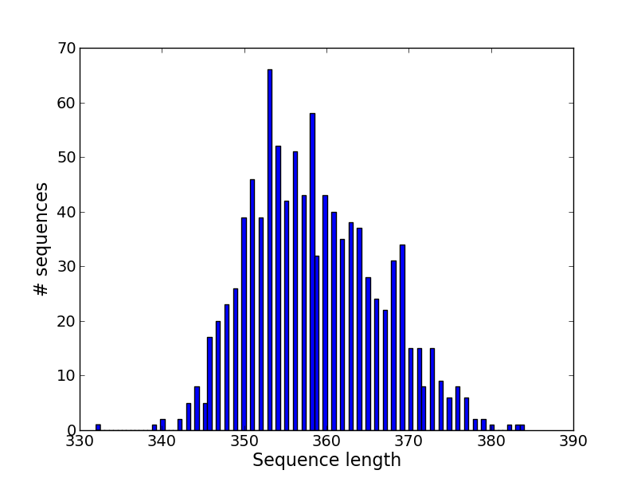
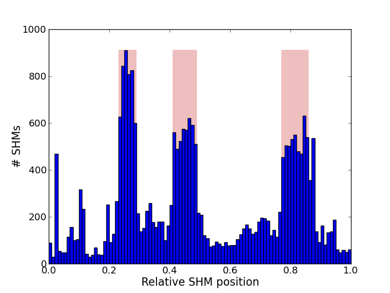

IgSimulator is a tool for simulation of antibody repertoire and Ig-seq library. IgSimulator is designed for testing and benchmarking tools for reconstruction of Ig repertoires.
IgSimulator generates:
- FASTA file with reference Ig repertoire
- FASTQ reads covering variable regions of simulated antibodies
- Ideal repertoire corresponding to Ig-seq library in CLUSTERS.FA and RCM format (details can be found here).
- Figures showing statistics of simulated repertoire:
|  |  |
| Histogram of simulated sequence lengths distribution. | Histogram of relative SHM positions distribution. Reds bars correspond to CDR positions. |
IgSimulator manual can be found here. Citation: Yana Safonova, Alla Lapidus, and Jennie Lill. IgSimulator: a versatile immunosequencing simulator. Bioinformatics first published online May 25, 2015. doi:10.1093/bioinformatics/btv326.